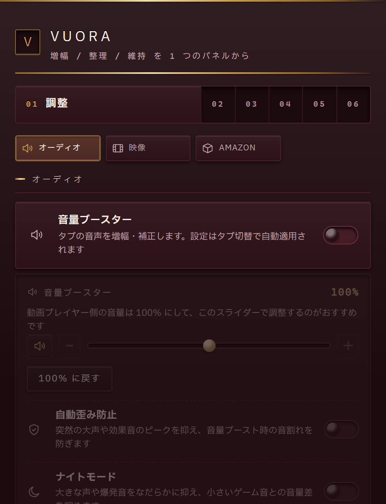

既定では何もしない
勝手にページを書き換えず、使う機能だけを自分で選びます。
Web viewing assistChrome / Firefox
YouTube の整理、X の UI 掃除、音量の底上げ。日々の Web 閲覧を快適にする 12 カテゴリの補助機能を、1 つのポップアップにまとめました。

FEATURE CATEGORIES
Vuora の構成
v1.0.18 でかつての「制限解除」機能は廃止し、Web 閲覧支援機能のみに特化しています。
ツールバーのアイコンから、12 カテゴリの一覧を開きます。
既定はすべて OFF。気になるカテゴリだけを有効にします。
カテゴリ内のサブ機能を個別に切り替えて、自分の見やすさに合わせます。
FEATURES
サイトごとに別々の拡張機能を入れると、設定場所も権限もばらけます。Vuora は日常的に使うサイトの補助を 1 つのポップアップに集約しています。
対象と処理の一覧
| カテゴリ | 内容 | 状態 |
|---|---|---|
| YouTube 整理 | 34 サブ機能 | ON |
| X クリーナー | 9 サブ機能 | ON |
| 画像ダウンロード | Instagram / TikTok | ON |
| その他 9 カテゴリ | 未使用 | OFF |
OPT-IN BY DEFAULT
default: all features OFF
your choice
インストールしただけでは何も変えない。有効化はすべて明示操作
DESIGN PRINCIPLES
勝手にページを書き換えず、使う機能だけを自分で選びます。
閲覧内容や設定を外部サーバーへ送信しません。
サイトごとの拡張機能を増やさず、1 つのポップアップで管理します。
INSTALL
Chromium 系ブラウザと Firefox 142 以降に対応。日本語・英語の 2 言語対応。MIT License。